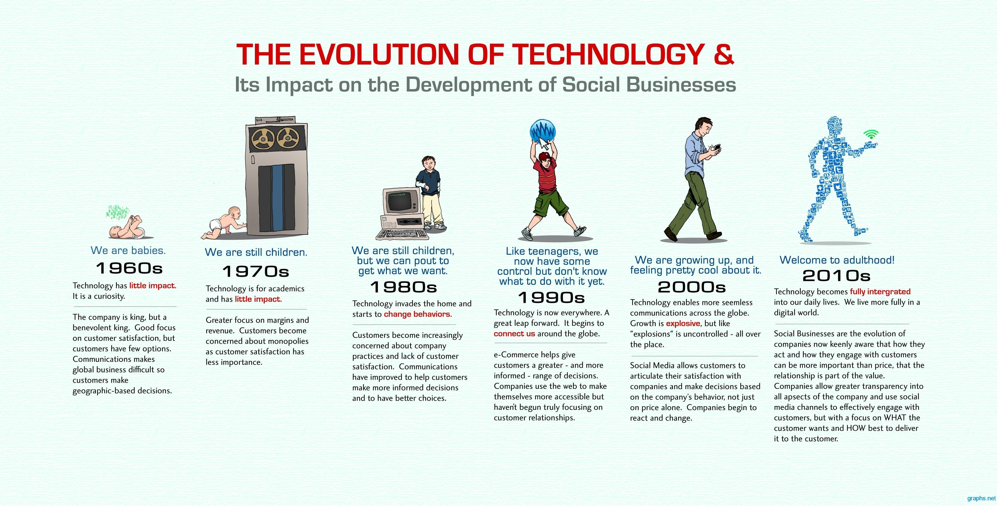
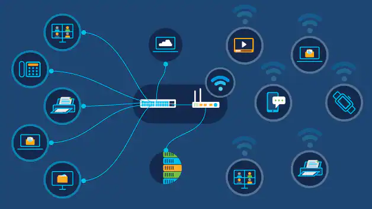
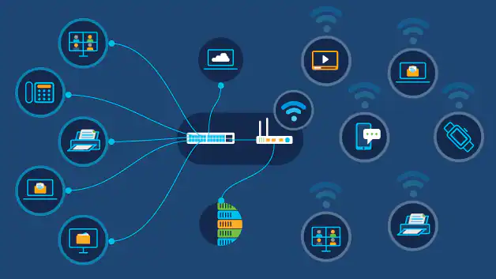

Introduction Of Computer Science:-
Computer science is the study of computation, automation, and information. Computer science spans theoretical disciplines (such as algorithms, theory of computation, information theory, and automation) to practical disciplines (including the design and implementation of hardware and software). Computer science is generally considered an area of academic research and distinct from computer programming.
Computer science is considered as part of a family of five separate yet interrelated disciplines: computer engineering, computer science, information systems, information technology, and software engineering. These five disciplines are interrelated in the sense that computing is their object of study, but they are separate since each has its own research perspective and curricular focus. Since 1991 the Association for Computing Machinery [ACM], the IEEE Computer Society [IEEE-CS], and the Association for Information Systems [AIS] have collaborated to develop.
The major subfields of computer science include the traditional study of computer architecture, programming languages, and software development. they also include computational science (the use of algorithmic techniques for modeling scientific data), graphics and visualization, human-computer interaction, databases and information systems, networks, and the social and professional issues that are unique to the practice of computer science.
The History Of Information Technology(IT)..?
Information technology (IT) is the use of computers to create, process, store, retrieve, and exchange all kinds of data and information. IT forms part of information and communications technology (ICT). An information technology system (IT system) is generally an information system, a communications system, or, more specifically speaking, a computer system — including all hardware, software, and peripheral equipment — operated by a limited group of IT users.
Ideas of computer science were first mentioned before the 1950s under the Massachusetts Institute of Technology (MIT) and Harvard University. As time went on, the field of information technology and computer science became more complex and was able to handle the processing of more data. Looking at early computing, Alan Turing, J. Presper Eckert, and John Mauchly were considered to be some of the major pioneers of computer technology in the mid-1900s. most of their efforts were focused on designing the first digital computer. Along with that, topics such as artificial intelligence began to be brought up as Turing was beginning to question such technology of the time period.
IT is essentially defining a logical algebraic function that produces consistent outcomes for specific processes then codifying them in either software or hardware formats (Mitchell 1998). However, the actual application of this conceptualization into practical working systems took almost three hundred years. The following history is a rough outline of how this occurred through a mixed technical and industry viewpoint, both of which have influenced the form that Leibniz’ conception has taken within information technology. The history begins first with the desire for a “machine computer”, then the application of computing to information processing under business machine manufacturers, the actual building of binary coded mainframe machines the 1960’s, and finally the extension of such systems through the rise of personal computing and internets.
What Is Information Technology(IT)..?
Information technology (IT) is the use of computer systems or devices to access information. Information technology is responsible for such a large portion of our workforce, business operations and personal access to information that it comprises much of our daily activities. Information technology is used by everyone from enterprise companies all the way down to one-person businesses and local operations. Global companies use it to manage data and innovate their processes.
The term IT (Information Technology) in its simplest form covers every task that computers are used for. The usage of technology to crunch information and resolve business challenges or to streamline and organize processes through technology in an organization is commonly known as IT. A few examples of information technology are – building communication networks within the organization, security of data and vital information, creation and management of databases, CRMs and other tools that help employees overcome operational challenges, boost efficiency, and improve speed, accuracy and convenience of processes.
Why Information Technology Is important.
Information Technology (IT) plays a vital role in today's personal, commercial, and not-for-profit uses. Information Technology is the main driver behind innovation, and without innovations, companies will not survive because they are the wave of the future. IT is the application of computers and other electronic equipment to receive, store, retrieve, transmit, and manipulate data. This data becomes information when it is put into intelligible and useful forms for communication. Even the education sector has been dramatically changed with the arrival of Information Technology. To run a business in the right way and generate expected outcomes, computers, software, and the internet helps a lot.
The importance of IT is sometimes taken for granted because its applications are so widespread worldwide. We depend on it in our personal lives for communication, banking, social media, investments, research, and so much more. Organizations cannot exist today and expect to stay competitive without adequate Information Technology systems. IT is an ever-changing industry and those who want to stay at the forefront must adapt these innovations to their uses whether personal or otherwise. Students are not bound to use the same old traditional method of learning. And all this is made possible by the introduction of Information Technology in the education field and the importance of technology can be seen.
Information technology helps to build and grow the commerce and business sector and generate the maximum possible output. The time taken by different sectors to generate business is now minimized with advancements in Information technology. It provides electronic security, storage, and efficient communication. Information technology needs computer applications. Computers connect IT to the different organizations of the world. It helps the employees to maintain records of their numerous clients of various companies. It helps patients to contact physicians online and take advice regarding their health problems. Also, records of patients can be managed properly by the system.
Read Also:
The above discussion clears that Information technology is very important in this 21st century. Each and every field needs Information technology. Without the internet and technical system, no business, education, agriculture work, and health sector can produce an expected outcome. Technology in today’s world is important.


What Are The Types Of Information Technology(IT).
Information technology is a broad term that involves the use of technology to communicate, transfer data and process information.
The different types of the Information Technology:-
- Analytics.
- Automation.
- Artificial Intelligence.
- Cloud Computing.
- Communications.
- Cyber Security.
- Data/Databases Management.
- Infrastructure.
- Internet Of Things.
- Machine Learning.
- Maintenance And Repair.
- Networks.
- Robotics.
- Software/Applications Development.
- Data Synchronization/Storage
 

What Is The Role Of Information Technology...?
The information technology is all set to play an all pervasive role in human resource management. Today we are in information technology (IT) era. Every organization will be affected by it. Many organisations have already started use of it. Information technology facilitates storing and regaining huge information quickly with the help of hardware and software networks and workstations at lesser costs. The use of information technology requires more technical and professional knowledge which is to be acquired by the present staff and newly acquired personnel’s must possess it.
It can also determine the need for training in future for the employees and executives. The entire data can be configurated to obtain new information in large quantity. The information technology armed human resource department with tremendous information to aid other departments of the organisation to have an access to human resource information to take decisions relating to employees of their departments. The use of information technology will change the work style of traditional nature because the decision support system will help in making quick decisions by the front line supervisors which were taken by higher ups in the managerial hierarchy.
We Need IT For Make Digital India.
Why Do We Need Information Technology(IT)..?
Information technology drives much of what we do in our personal and professional lives. It is the foundation of our communication, technological advancement, innovation, sustainability and recreation. We use information technology on a personal level to connect and communicate with others, play games, share media, shop and be social. From a career perspective, information technology is largely responsible for much of our business operations and spans nearly every industry. From healthcare to food services, manufacturing to sales, and beyond, we rely on IT to help connect us to others, store and manage information and create more efficient processes.
The importance of IT is sometimes taken for granted because its applications are so widespread worldwide. We depend on it in our personal lives for communication, banking, social media, investments, research, and so much more. Organizations cannot exist today and expect to stay competitive without adequate Information Technology systems. Not many people know it. However, many of the things we only once dreamed about are now made possible by information technology. Furthermore, a lot of things that we are presently enjoying for some time are now even better through IT.

Importance Of Information Technology(IT).
Information technology (IT) plays an essential role in the formation and development of modern society today. Because of information technology, we can set up, install, or manage all aspects of social life. Information technology is driving the world to modernize and make the world a better place. It allows businesses to maximize productivity. Besides, it also helps us communicate better by eliminating all distances.
The aura of Information technology can be seen in almost all fields including work, learning, leisure, and health. From ministries to classrooms, every sector uses IT for the best results. Physicians also use Information technology to check record entries, patient history, and their prescribed dose to move accordingly. The use of Information technology can also be seen in agriculture and to increase productivity. Satellites are connected with agriculture to predict monsoons and smog. Through drone technology, mass data collection, land survey, use of pesticides, seed planting, water irrigation, and use of fertilizers are possible.
The Uses Of Information Technology.
- Business.
- Education.
- Finance.
- Health-Care.
- Security.
- Communication.
- Employment.
"Information technology has changed our lives drastically. You are only a single click away from everything. So here is a list of the benefits of information technology in our lives also there is a need for Information Technology in every field".